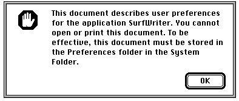
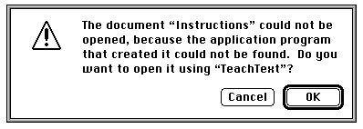

Displaying Messages When the Finder Can't Find
When the user double-clicks a file or selects it and chooses either the Open or the Print command from the Finder's File menu, the Finder looks for the application whose signature is stored in the file's creator field. The Finder starts up that application and tells it which documents the user wants to open or print. If the Finder cannot find the creator application, it displays an alert box.
Your ApplicationIf the document is of file type
'TEXT'or'PICT'and if the TeachText application is available, an alert box asks the user whether the TeachText application should be
used to open the document. For documents of any other file type, or if the TeachText application is not present, the Finder displays an alert box like the one shown in
Figure 7-9. Your application should store one of two string resources in its documents
to make the alert box message more useful than the default shown in Figure 7-9.Figure 7-9 The default application-unavailable alert box
Before displaying the default message shown in Figure 7-9, the Finder looks in the
document for one of two special'STR 'resources with resource ID numbers of -16396 and -16397: the missing-application name string and the application-missing message string, respectively. If the Finder can't find the document's creator on any mounted
volume, it looks first for the application-missing message string resource. Provide an
application-missing message string resource if you do not intend for users to open the file. The message should explain why the file can't be opened. If the Finder does not find an application-missing message string resource, it looks for the missing-application name string resource. Provide a missing-application name string resource if you intend for users to open the file. The missing-application name string should be your application's name; the Finder displays it in an alert box to inform the user that your application is needed.Supply either the application-missing message string resource or the missing-application name string resource; don't supply both. Supply an application-missing message string resource for documents (such as a preferences file) that your application uses but that users should not open; supply a missing-application name string resource for documents that you intend for users to open with your application.
Your missing-application name string resource (an
'STR 'resource with a resource ID number of -16396) should contain the name of your application. Listing 7-5 on the next page shows a missing-application name string resource for the SurfWriter application.Listing 7-5 Rez input for a missing-application name string resource
resource 'STR ' (-16396, purgeable) { /*the application name*/ "SurfWriter" };You can store this resource in the resource fork of your application. When your application saves a document for the first time, it should copy the missing-application name string resource from your application's resource fork to the resource fork of the newly created document. Listing 7-6 shows a fragment of an application-defined function calledDoSaveAsCmd, which the application calls when the user chooses the Save As command from the File menu. (For a description of the File Manager routines used here to create, open, and save the resource file, see Inside Macintosh: Files.)Listing 7-6
Storing a missing-application name string resource in the resource fork of
a documentVAR myData: MyDocRecHnd; {handle to document record} myErr: OSErr; myFile: Integer; {file reference number} {with the DoSaveAsCmd routine: create document's resource fork} FSpCreateResFile(myData^^.fileFSSpec, 'MYAP', 'TEXT', smSystemScript); myErr := ResError; IF myErr = noErr THEN {open the resource fork} myFile := FSpOpenResFile(myData^^.fileFSSpec, fsRdWrPerm); IF myFile > 0 THEN {copy the missing-application name string} myErr := DoCopyResource('STR ', -16396, gAppsResFile, myFile) ELSE myErr := ResError; IF myErr = noErr THEN myErr := FSClose(myFile); {close the resource fork}Listing 7-7 shows the application-defined functionDoCopyResource, which copies the missing-application name string resource from the application's resource fork into the newly created document's resource fork. (For a description of the Resource Manager routines used here to set, open, and write the resource file, see the chapter "Resource Manager" in Inside Macintosh: More Macintosh Toolbox.)Listing 7-7 Copying the missing-application name string resource into the resource fork of
a documentFUNCTION DoCopyResource (theType: ResType; theID: Integer; source: Integer; dest: Integer): OSErr; VAR myHandle: Handle; {handle to resource to copy} myName: Str255; {name of resource to copy} myType: ResType; {ignored; used for GetResInfo} myID: Integer; {ignored; used for GetResInfo} BEGIN UseResFile(source); {set the source resource file} myHandle := GetResource(theType, theID); {open the source} IF myHandle <> NIL THEN BEGIN GetResInfo(myHandle, myID, myType, myName); {get resource } { name} DetachResource(myHandle); {detach resource} UseResFile(dest); {set the destination resource file} AddResource(myHandle, theType, theID, myName); IF ResError = noErr THEN WriteResource(myHandle); {write resource data} END; DoCopyResource := ResError; {return result code} END;If a user tries to open or print one of the application's documents when the application is not present, the Finder specifies the application's name in the alert box, as illustrated in Figure 7-10.Figure 7-10 The application-unavailable alert box specifying an application's name
Your application-missing message string resource (an
'STR 'resource with a
resource ID number of -16397) should explain why the user cannot open or print a document. Use this resource for files--such as your application's preferences file--
that are not intended to be opened or printed by the user. Register a signature (as explained in "Giving a Signature to Your Application and a Creator and a File Type to Your Documents" beginning on page 7-7) that is different from the signature of your application and set this signature as the creator of files that you don't want your users to open. This ensures that the Finder displays your message instead of launching your application when the user double-clicks these documents.Listing 7-8 illustrates an application-missing string resource that explains why a user cannot open a preferences file.
Listing 7-8 Rez input for an application-missing message string resource
resource 'STR ' (-16397, purgeable) {/*the message*/ "This document describes user preferences for the application " "SurfWriter. You cannot open or print this document. To be " "effective, this document must be stored in the Preferences " "folder in the System Folder." };Figure 7-11 shows the alert box generated by Listing 7-8.Figure 7-11 The application-unavailable alert box with a customized message

Note that if your application creates documents of file type
'TEXT'or'PICT', if
the TeachText application is available, and if your application is missing when the
user tries to open these documents from the Finder, the Finder always displays the
alert box shown in Figure 7-12. For these file types, the Finder displays this alert box even if you provide missing-application name string resource or application-missing message string resource.Figure 7-12 The application-unavailable alert box for
'TEXT'and'PICT'documents